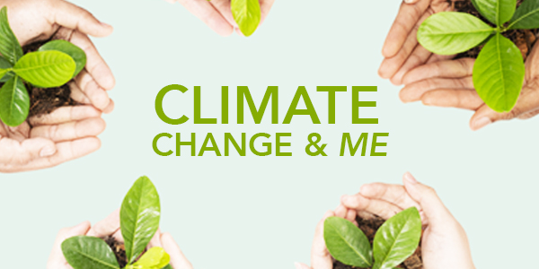
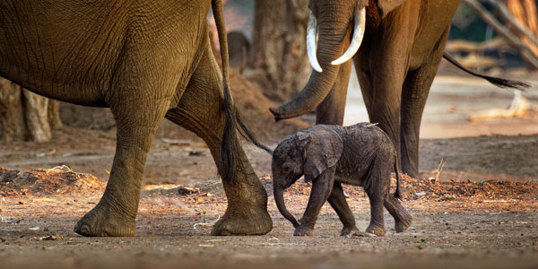
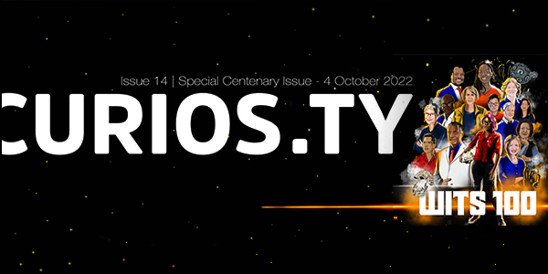

Latest NewsAll News

Climate Change and Me marks Wits’ largest first-year course in its history
Climate Change and Me was launched in 2022 and became the largest course by student numbers ever offered at Wits University.
11 November 2022
.jpg) Clean water solutions made possible for Alex informal settlement through water-based research
The Accessible Greywater Solutions for Urban Informal Townships (URBWAT) project is providing sustainable water solutions for the Alexandra township.
11 November 2022
Clean water solutions made possible for Alex informal settlement through water-based research
The Accessible Greywater Solutions for Urban Informal Townships (URBWAT) project is providing sustainable water solutions for the Alexandra township.
11 November 2022

How we treat animals is key to human health, just look at Covid-19
‘Scientivist’ says planetary health must be foremost on all agendas because the ill-treatment of animals and delicate ecosystems plays havoc with human health.
11 November 2022
Clean water solutions made possible for Alex informal settlement through water-based research
The Accessible Greywater Solutions for Urban Informal Townships (URBWAT) project is providing sustainable water solutions for the Alexandra township.
11 November 2022

#Wits100

#WitsFirsts

#WitsForGood

In this special issue to mark Wits University’s centenary year, we look back over a 100 years during which our researchers have undoubtedly changed the world for good. We also look to the next 100 years and to a new generation of early career researchers in Africa who are taking on a myriad of complex planetary problems.
Read more